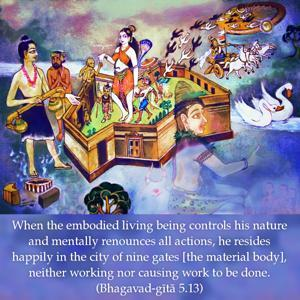
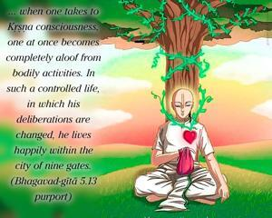

When the embodied living being controls his nature and mentally renounces all actions, he resides happily in the city of nine gates [the material body], neither working nor causing work to be done.


The embodied soul lives in the city of nine gates. The activities of the body, or the figurative city of body, are conducted automatically by its particular modes of nature. The soul, although subjecting himself to the conditions of the body, can be beyond those conditions, if he so desires. Owing only to forgetfulness of his superior nature, he identifies with the material body, and therefore suffers. By Kṛṣṇa consciousness, he can revive his real position and thus come out of his embodiment. Therefore, when one takes to Kṛṣṇa consciousness, one at once becomes completely aloof from bodily activities. In such a controlled life, in which his deliberations are changed, he lives happily within the city of nine gates. The nine gates are mentioned as follows:
nava-dvāre pure dehī
haṁso lelāyate bahiḥ
vaśī sarvasya lokasya
sthāvarasya carasya ca
“The Supreme Personality of Godhead, who is living within the body of a living entity, is the controller of all living entities all over the universe. The body consists of nine gates [two eyes, two nostrils, two ears, one mouth, the anus and the genitals]. The living entity in his conditioned stage identifies himself with the body, but when he identifies himself with the Lord within himself, he becomes just as free as the Lord, even while in the body.” (Śvetāśvatara Upaniṣad 3.18)
Therefore, a Kṛṣṇa conscious person is free from both the outer and inner activities of the material body.